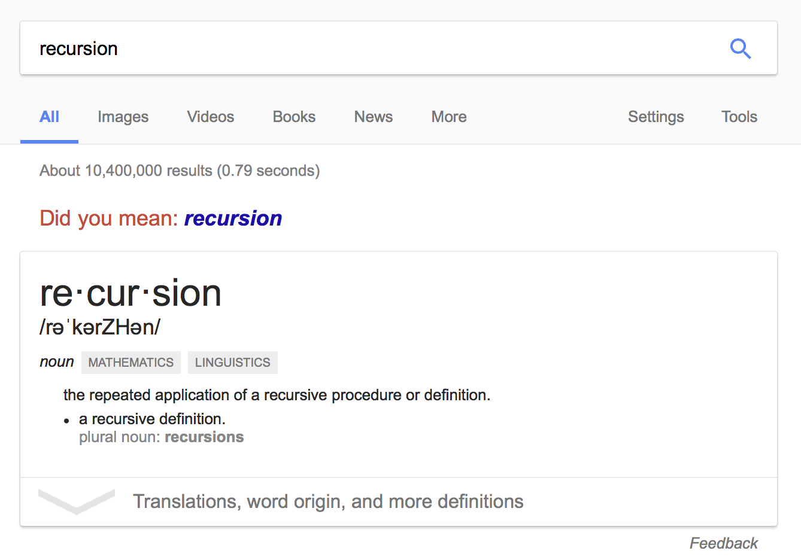

What the heck is recursion?
Poll the room for ideas, repeat each idea. Write them down or remember them.
In order to understand recursion, one must first understand recursion.
Ask the room about some recursive acronyms.
Has anyone ever heard of GNU, Nagios, PHP
Gnu's Not Unix
Nagios Ain't Gonna Insist on Sainthood
PHP Hypertext Preprocessor - Need a reference for this
GNU
Logo Image
Reference
These are all accurate I promise, I'll publish some updates ASAP
with references for each of them!
Nagios
Logo Image
Galstad, Ethan (2009-08-24).
"FAQ Database: Miscellaneous: What does Nagios mean?" .
Nagios: Frequently Asked Questions.
Nagios Enterprises, LLC.
Retrieved 2014-06-02.
The official meaning is that N.A.G.I.O.S. is a recursive acronym which stands for "Nagios Ain't Gonna Insist On Sainthood".

Most of the content which currently exists is an in-joke for those
who already get it.
Factorial Function
\begin{aligned}
\operatorname{fact}(n) = n \cdot \operatorname{fact}(n)
\end{aligned}
Lets solve for
\begin{aligned}
\operatorname{fact}(2)
\end{aligned}
To begin solving this problem we have to substitute for each
occurrence of n in the definition of fact.
The first step
\begin{aligned}
\operatorname{fact}(2) = 2 \cdot \operatorname{fact}(2-1)
\end{aligned}
At this time we don't know the result of evaluating fact(2-1)
but we do know the result of evaluating 2 - 1
\begin{aligned}
\operatorname{fact}(2) = 2 \cdot \operatorname{fact}(1)
\end{aligned}
Now we can start evaluating fact(1), can someone explain what the
next step will look like?
\begin{aligned}
\operatorname{fact}(2) &= 2 \cdot \operatorname{fact}(1) \\
\operatorname{fact}(1) &= 1 \cdot \operatorname{fact}(1 - 1)
\end{aligned}
One minus one is obviously zero, so now we get fact(0)
\begin{aligned}
\operatorname{fact}(2) &= &2 \cdot \operatorname{fact}(1) \\
\operatorname{fact}(1) &= &1 \cdot \operatorname{fact}(0) \\
\operatorname{fact}(0) &= &...
\end{aligned}
And what happens when we evaluate fact(0)
Factorial Function
\begin{aligned}
\operatorname{fact}(n) = n \cdot \operatorname{fact}(n)
\end{aligned}
Improved Factorial Function
\begin{aligned}
\operatorname{fact}(n) &=
n \cdot \operatorname{fact}(n) \\
\operatorname{fact}(1) &= 1
\end{aligned}
Solve For
\begin{aligned}
\operatorname{fact}(3)
\end{aligned}
When we look at fact(3), we look back at the function definition
and replace each instance of n with 3, so you get
fact(3) = 3 * fact(3-1)
\begin{aligned}
\operatorname{fact}(3) = 3 \cdot \operatorname{fact}(2)
\end{aligned}
We can't continue solving because we don't know what fact(2) is,
so we have to evaluate fact(2)
\begin{aligned}
\operatorname{fact}(3) &= 3 \cdot \operatorname{fact}(2) \\
\operatorname{fact}(2) &= 2 \cdot \operatorname{fact}(1)
\end{aligned}
Here we still have to evaluate, fact(1) before we can continue
\begin{aligned}
\operatorname{fact}(3) &= 3 \cdot \operatorname{fact}(2) \\
\operatorname{fact}(2) &= 2 \cdot \operatorname{fact}(1) \\
\operatorname{fact}(1) &= 1
\end{aligned}
fact(1) is just 1, 1 is our base case, and so we can begin to
collapse values and feel like we're moving closer to a solution
\begin{aligned}
\operatorname{fact}(3) &= 3 \cdot \operatorname{fact}(2) \\
\operatorname{fact}(2) &= 2 \cdot 1
\end{aligned}
\begin{aligned}
\operatorname{fact}(3) = 3 \cdot 2
\end{aligned}
\begin{aligned}
\operatorname{fact}(3) = 6
\end{aligned}
We started with this
\begin{aligned}
\operatorname{fact}(n) = n \cdot \operatorname{fact}(n)
\end{aligned}
Worked our way here
\begin{aligned}
\operatorname{fact}(n) &=
n \cdot \operatorname{fact}(n) \\
\operatorname{fact}(1) &= 1
\end{aligned}
Can you think of any other improvements?
Can anyone think of another way we can improve it?
Limiting the scope of numbers it's defined for
Defining 0 to return 1 (enables neat tricks in other maths)
\begin{aligned}
\operatorname{fact}(n) =
\begin{cases}
1 & \mbox{if } n = 0 \\
n \cdot \operatorname{fact}(n-1) & \mbox{if } n > 0 \\
\end{cases}
\end{aligned}
\begin{aligned}
\zeta(s) = \sum _{n=1}^{\infty}{\frac{1}{n^{s}}}
\end{aligned}
Define the Riemann Zeta function here to drop in if anyone wants
to see some weird math, and explain why programming should be
more accessible than that.
What is a stack?
Same thing here, use the stack you created on the board to walk through this.
Still hoping I can find a cool web tool that does the vis I want, otherwise I'll make it.
Walk through collapsing the callstack and evaluate the function.
Explain the properties of a stack at the same time.
Where does recursion appear in programs?
Visualize merge sort
It would be awesome if I could use dot/graphviz and somehow animate
Mutual Recursion
Does anyone have an idea of what this might be?
What the heck is tail call?
Explain/Whiteboard the reason this means you can reuse the same
stack frame.
Tail Recursion
Tail Recursion is when you recurse with the result of the evaluation
of the recursive function being the final and self contained call.
Tail Recursion Elimination
This uses TCO to phenomenal effect, and practically turns recursion
into iteration. You don't have to hold onto partial evaluations.
If the compiler is going to optimize recursion into iteration anyways, why bother?
Maintainability, Provability, some problems can only be solved with recursion.
Further Reading
How to Design Programs
The Little Schemer
Structure and Interpretation of Computer Programs
“If you want to build a ship, don't drum up people to collect wood and don't assign them tasks and work, but rather teach them to long for the endless immensity of the sea.”
–Antoine de Saint-Exupery